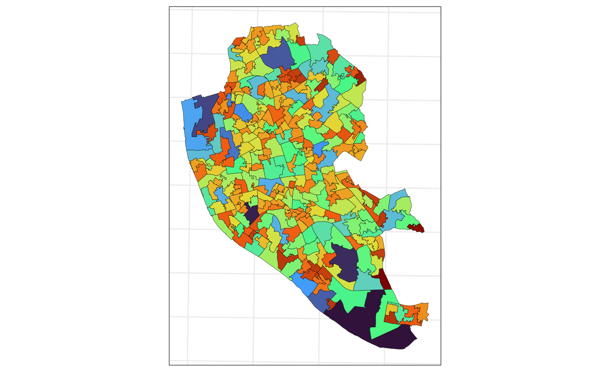

vignettes/fit-and-pred.Rmd
fit-and-pred.Rmdr— title: “3. Fitting models and making predictions” output: rmarkdown::html_vignette bibliography: biblio.bib vignette: > % % % —
If interested in the theory involving this calculations, take a look at this vignette.
Application
To exemplify the fitting and predicting functions, we are going to use the data from @johnson2020dealing again1. First, in the code chunk below, we load the data and convert it to spmismo compatible classes. Since this is a toy example, we are going to generate a 500 points grid for the MSOA data and 5 points by polygon for the LSOA data.
data(liv_msoa)
data(liv_lsoa)
## workaround for compatibility with different PROJ versions
st_crs(liv_msoa) <-
st_crs(liv_msoa)$input
st_crs(liv_lsoa) <-
st_crs(liv_lsoa)$input
## msoa to spm
spm_msoa <-
sf_to_spm(sf_obj1 = liv_msoa,
n_pts = 500,
type = "regular",
by_polygon = FALSE,
poly_ids = "msoa11cd",
var_ids = "leb_est")
## lsoa to spm
spm_lsoa <-
sf_to_spm(sf_obj1 = liv_lsoa,
n_pts = 5,
type = "regular",
by_polygon = TRUE,
poly_ids = "lsoa11cd",
var_ids = "imdscore")The map below shows the LEB observed at the MSOAs.
ggplot(data = liv_msoa,
aes(fill = leb_est)) +
geom_sf(color = 1, lwd = .1) +
scale_fill_viridis_c() +
theme_minimal()
The map below displays the IMD observed at the LSOAs.
ggplot(data = liv_lsoa,
aes(fill = imdscore)) +
geom_sf(color = 1, lwd = .1) +
scale_fill_viridis_c() +
theme_minimal()
Fit at MSOA, prediction at LSOA
Using as starting parameters \(\alpha = 70\) (average of \(Y\)), \(\omega = 1\) (can be seen as a nugget effect), \(\sigma^2\) (variance parameter for the powered exponential family), and \(\phi = 1\) (paramter that controls the range os spatial dependence, 1 here represents 1_km_). We are going to compute the Maximum Likelihood estimates considering a Powered Exponential covariance function to the data, with \(\kappa = 1.5\)2. Note that, it is important for this inputing vector to be a named vector, because some functions track the parameters by their names.
theta_st_msoa <-
c("alpha" = 70, "omega" = 1,
"sigsq" = 1, "phi" = 1)
fit_msoa <-
fit_spm(x = spm_msoa,
theta_st = theta_st_msoa,
model = "pexp",
kappa = 1.5,
apply_exp = TRUE,
control = list(maxit = 500))After a few seconds, we get the Results. Now, we can use the function summary_sspm_fit to get the summary of the results. The function prints a table containing the estimates, their standard errors, and 1 - sig confidence interval based on the asymptotic normality of the MLEs. The function also prints a message indicating if the optimization algorithm has converged3.
summary_sspm_fit(fit_msoa, sig = .05)
#>
#> optimization algorithm converged: yes
#>
#> par estimate se ci
#> 1 alpha 75.897491 0.7067979 [74.512; 77.283]
#> 2 omega 7.924365 5.4567596 [-2.771; 18.619]
#> 3 sigsq 8.924365 0.5250597 [7.895; 9.953]
#> 4 phi 1.760340 0.1479164 [1.470; 2.050]Finally, now we are going to perform predictions of the LEB at the LSOA level. To do so, we use the function predict_spm. The x argument gives the sf on which we want to make the predictions according to the sbm_obj, which represents the estimated parameters. Now, take a look at the remaining arguments. The last two, are analogous to what we have seen for the function sf_to_spm. They are concerning the grid generated over the study region, now we going to make predicitons over this grid. I set it to 2500 to “approximate” a continuous region4. The argument .aggregate if set to TRUE, computes the predictions over the polygons from the input x (in this case liv_lsoa). This function also works if the input is a sf object with POINT geometries. The objects returned by the function pred_lsoa are lists with the following elements: 1) mu_pred - a vector with the predicted average for each location in the generated grid; 2) sig_pred the variance covariance matrix associated with the same grid; 3) the predictions (and standard errors) organized in an sf object to facilitate the visualization of the predictions over a (almost) continuous space; and 4) pred_agg which is returned only if we set .aggregate = TRUE. The last one contains the predictions and their standard erros integrated over the “new regions”.
pred_lsoa <- predict_spm(x = liv_lsoa, spm_obj = fit_msoa,
.aggregate = TRUE, n_pts = 2500,
type = "regular")Now, let’s make some data manipulation to make the visualization look nicer. We are going to stack all the data to make it easier to plot them all together using ggplot2. The next map whos the predictions.
aux_viz1 <- vector(mode = "list",
length = 4)
aux_viz1[[1]] <- transform(pred_lsoa$pred_grid["mu_pred"],
surface = "continuous",
variable = "prediction")
names(aux_viz1[[1]])[1] <- "value"
aux_viz1[[2]] <- transform(pred_lsoa$pred_grid["se_pred"],
surface = "continuous",
variable = "se")
names(aux_viz1[[2]])[1] <- "value"
aux_viz1[[3]] <- transform(pred_lsoa$pred_agg["mu_pred"],
surface = "aggregated",
variable = "prediction")
names(aux_viz1[[3]])[1] <- "value"
aux_viz1[[4]] <- transform(pred_lsoa$pred_agg["se_pred"],
surface = "aggregated",
variable = "se")
names(aux_viz1[[4]])[1] <- "value"
aux_viz1 <- do.call("rbind", aux_viz1)
ggplot(data = aux_viz1[aux_viz1$variable == "prediction",],
aes(fill = value,
color = value)) +
geom_sf(data = st_geometry(pred_lsoa$pred_agg), color = 1,
lwd = .1, inherit.aes = FALSE) +
geom_sf(pch = 15) +
scale_fill_viridis_c() +
scale_color_viridis_c() +
guides(color = FALSE) +
facet_wrap(surface ~ .) +
theme_bw()
The next one displays the standard errors for the predictions. Clearly, we have less variability in the neighborhoods on which we have small polygons.
ggplot(data = aux_viz1[aux_viz1$variable == "se",],
aes(fill = value,
color = value)) +
geom_sf(data = st_geometry(pred_lsoa$pred_agg), color = 1,
lwd = .1, inherit.aes = FALSE) +
geom_sf(pch = 15) +
scale_fill_viridis_c() +
scale_color_viridis_c() +
guides(color = FALSE) +
facet_wrap(surface ~ .) +
theme_bw()
Fit at LSOA, predict at MSOA
Using as starting parameters \(\alpha = 25\) (average of \(Y\)), \(\omega = 1\) (can be seen as a nugget effect), \(\sigma^2\) (variance parameter for the powered exponential family), and \(\phi = 1\) (paramter that controls the range os spatial dependence, 1 here represents 1_km_). We are going to compute the Maximum Likelihood estimates considering a Matern covariance function to the data, with \(\kappa = 2.5\).
theta_st_lsoa <-
c("alpha" = 25, "omega" = 1,
"sigsq" = 1, "phi" = 1)
fit_lsoa <-
fit_spm(x = spm_lsoa,
theta_st = theta_st_lsoa,
model = "matern",
kappa = 2.5,
apply_exp = TRUE,
control = list(maxit = 500))After a few seconds, we get the Results. Now, we can use the function summary_sspm_fit again to summarise the estimated parameters.
summary_sspm_fit(fit_lsoa, sig = .05)
#>
#> optimization algorithm converged: yes
#>
#> par estimate se
#> 1 alpha 39.346894 2.955050e+01
#> 2 omega 367.215811 8.578584e+77
#> 3 sigsq 368.215811 2.891756e+00
#> 4 phi 1.708769 9.965613e-02
#> ci
#> 1 [-18.571; 97.265]
#> 2 [-1681371576065430380694774844776615085019998440658141800011837821504312049664000.000; 1681371576065430380694774844776615085019998440658141800011837821504312049664000.000]
#> 3 [362.548; 373.884]
#> 4 [1.513; 1.904]Now we are going to perform predictions of the IMD at the MSOA level. Since from now on the process is pretty much the exam, the explanation will be shorter.
pred_msoa <- predict_spm(x = liv_msoa, spm_obj = fit_lsoa,
.aggregate = TRUE, n_pts = 2500,
type = "regular")Now, let’s make some data manipulation to again. Note that, the predictions for this variable have more
aux_viz2 <- vector(mode = "list",
length = 4)
aux_viz2[[1]] <- transform(pred_msoa$pred_grid["mu_pred"],
surface = "continuous",
variable = "prediction")
names(aux_viz2[[1]])[1] <- "value"
aux_viz2[[2]] <- transform(pred_msoa$pred_grid["se_pred"],
surface = "continuous",
variable = "se")
names(aux_viz2[[2]])[1] <- "value"
aux_viz2[[3]] <- transform(pred_msoa$pred_agg["mu_pred"],
surface = "aggregated",
variable = "prediction")
names(aux_viz2[[3]])[1] <- "value"
aux_viz2[[4]] <- transform(pred_msoa$pred_agg["se_pred"],
surface = "aggregated",
variable = "se")
names(aux_viz2[[4]])[1] <- "value"
aux_viz2 <- do.call("rbind", aux_viz2)
ggplot(data = aux_viz2[aux_viz2$variable == "prediction",],
aes(fill = value,
color = value)) +
geom_sf(data = st_geometry(pred_msoa$pred_agg), color = 1,
lwd = .1, inherit.aes = FALSE) +
geom_sf(pch = 15) +
scale_fill_viridis_c() +
scale_color_viridis_c() +
guides(color = FALSE) +
facet_wrap(surface ~ .) +
theme_bw()
The next one displays the standard errors for the predictions.
ggplot(data = aux_viz2[aux_viz2$variable == "se",],
aes(fill = value,
color = value)) +
geom_sf(data = st_geometry(pred_msoa$pred_agg), color = 1,
lwd = .1, inherit.aes = FALSE) +
geom_sf(pch = 15) +
scale_fill_viridis_c() +
scale_color_viridis_c() +
guides(color = FALSE) +
facet_wrap(surface ~ .) +
theme_bw()
“Joint” model
For more details see this link.
No we are going to model the two variables together. Besides an additional variance parameter, for this model we have an additional intercept and a \(\beta\) parameter that measures how associated the two variables are (at the continuous process scale). First, we create a spm object contaning the info about both variables, as described in this vignette.
## joint spm object
spm_xy <-
sf_to_spm(sf_obj1 = liv_msoa,
sf_obj2 = liv_lsoa,
n_pts = list(500, 5),
type = "regular",
by_polygon = c(FALSE, TRUE),
poly_ids = list("msoa11cd", "lsoa11cd"),
var_ids = list("leb_est", "imdscore"))Now, we can fit the model using the same fit_spm function. Here, we are using the Exponential covariance function. Also, pay attention the the different starting parameters forthe vector theta_xy.
theta_xy <-
c("alpha" = 60, "beta" = 2,
"gamma" = 30, "omega" = 10,
"sigsq" = 1, "phi" = 3,
"nusq" = 10)
fit_xy <-
fit_spm(x = spm_xy,
theta_st = theta_xy,
model = "matern",
kappa = .5,
apply_exp = TRUE,
control = list(maxit = 1000))Now, we use the same summary function to verify the results as follows.
summary_sspm_fit(fit_xy, sig = .05)Note that, for this scenario the optimization algorithm has not converged. For this reason, I set, temporarily, the eval option to FALSE for the three last chunks of code.
This needs to be further investigated.
P.S.: For all estimation problems we have used the parameter
apply_exp = TRUE, which implies that the parameters that cannot assume negative values have to be exponentiated. This makes the optimization process easier. The only care that we need to take is that we need to use the Delta Method to Transform the Information Matrix accordingly.
for more details about the data, take a look at the vignette sf-to-spm↩︎
This parameter is known to be hard to be estimated in the literature of geostatistics.↩︎
The default algorithm used by the package is the Nelder-Mead, this can easily be changed by setting the parameter
opt_method = "L-BFGS-B", for example.↩︎Be careful here, a very large number of points can result in intractable covariance matrices↩︎